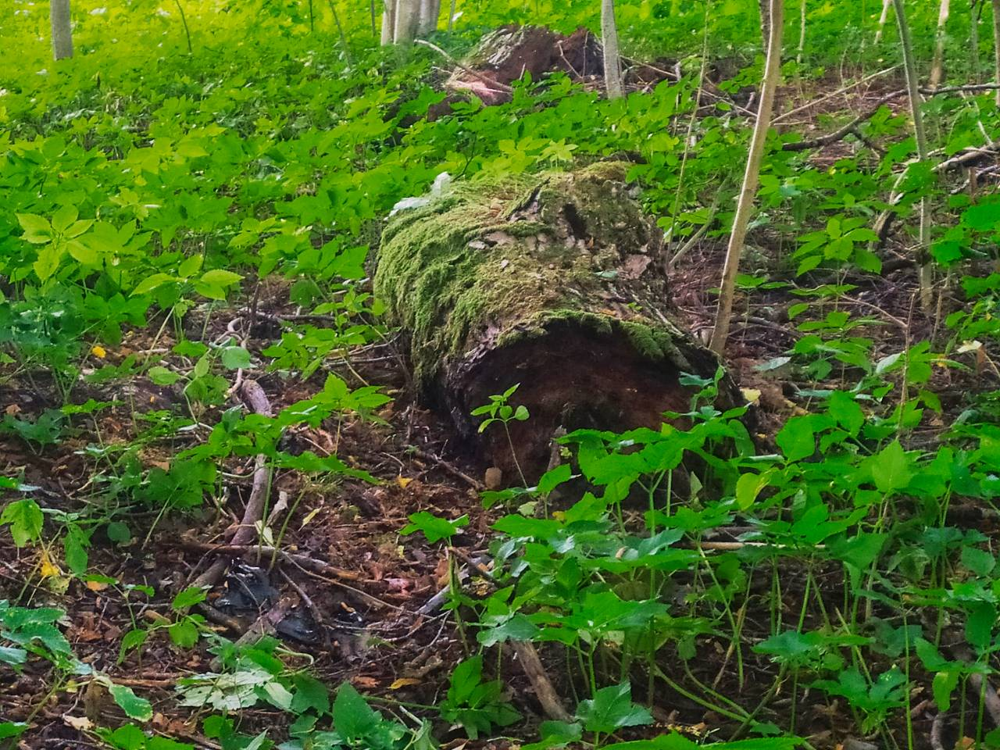
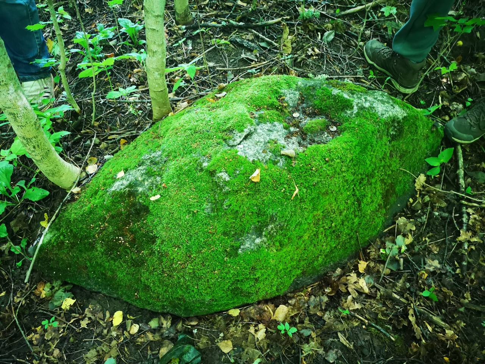

Как изменить свою судьбу? Возможно ли это? Вы сами найдете ответы на эти вопросы, если посетите огромную липу на древнем капище языческой богини Лаймы недалеко от местечка Лынтупы на Голубых озёрах.
По местному преданию липе богини Лаймы больше 300-т лет, но, возможно, намного больше. Липа выглядит мощнее и старше подобных деревьев, которые насчитывают 500 лет. Но к истории дерева мы еще вернёмся.
Богиню Лайму также называют балтской Фортуной, богиней знаний и судьбы или же богиней рока. Лайма следит за тем, чтобы всё, предназначенное богом, а то есть, рок, который ты никак не изменишь, свершился. У неё есть две сестры-богини. Среднюю зовут Гельциня, она является богиней смерти, но эта девушка вовсе не злая, а как раз наоборот. Она может помочь человеку спокойно уйти в мир иной или, обманув судьбу, и даже самого бога, помочь человеку выжить. Эта богиня предстаёт в образе змеи и покровительствует медикам. Недаром символом медицины является змея.
А младшая, которую называют Кукушкой, знает, сколько осталось жить человеку. Помните: кукушка, кукушка, сколько мне жить? Корни этих вопросов в истории Лаймы.
Недалеко от священной липы, как и на любом языческом капище, лежит жертвенный камень. Он тоже не простой. Камень имеет необычную симметричную вытянутую форму, как будто он обтесан по краям. На самом деле это жертвенник, который Лайма усердно трёт каждый день по приказу бога. Говорят, что, когда Лайма сотрёт жертвенник до конца, настанет конец человечества.
 
Если вы добрались до этого капища, у вас появляется замечательная возможность изменить свою судьбу. Для этого нужно сделать подношение Лайме. Удивительно, но такая могущественная богиня предпочитает обычные земные угощения: молоко, белый хлеб, творожки. Так рассказывала 90-летняя местная жительница, которая жила рядом с капищем. Она и поведала краеведу Алесю Гарбулю про это место и его историю. На жертвеннике и сейчас лежат монетки...
Это же капище в свое время посетил известный литовский историк и балтовед Викинтас Вайткявичус и подтвердил, что это капище именно этой богини.
В конце 90-х тут побывали биологи Института биологии НАН Беларуси. Учёные сделали сверление липы, в ходе которого оказалось, что дерево сгнило изнутри на 2/3, поэтому решили, не придавать ей значение памятника природы, как задумывалось ранее: дерево в любой момент может упасть. Удивительно, но после очередного исследования учёные определили, что дерево исцеляет само себя уже на протяжении 180 лет. Оно наращивает новую древесину внутри огромного дупла.
Записали Полина Панченко и Дарья Терро